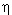

1. Метод приведения уравнений к безразмерному виду
|
1.2. Методика определения неизвестных характерных параметров процесса
Рассмотрим методику определения неизвестных характерных параметров. Для этого выразим переменные математической модели через характерные и безразмерные значения:
Рассмотрим второе уравнение в системе (2.2), которое после несложных преобразований можно представить в виде:
Рассмотрим теперь первое уравнение в системе (2.2), которое после несложных преобразований можно привести к виду:
Таким образом, если характерные значения скорости роста кристаллов и плотности функции распределения кристаллов по размерам соответствуют выражениям (2.3), (2.4), то оба уравнения в системе (2.2) полностью совпадают с исходными уравнениями математической модели процесса кристаллизации (2.1). Однако порядки переменных в уравнениях системы (2.1) различны (например, функция f имеет порядок 1020, а  - 10-10), вследствие чего расчётные ошибки при определении функции f , не значимые для неё самой, могут привести к сильным искажениям значений . В то же время при численном решении уравнений системы (2.2) этого не произойдёт, так как все переменные в них имеют одинаковый порядок. |